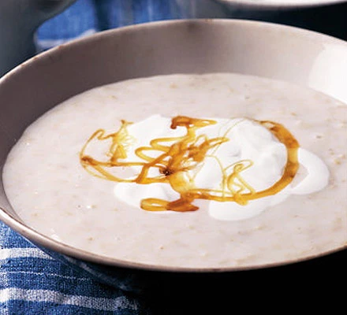

Porridge

Description
Porridge is a food made by heating or boiling ground, crushed or chopped starchy
plants, typically grain, in milk or water. It is often cooked or served with added
flavourings such as sugar, honey, (dried) fruit or syrup to make a sweet cereal,
or it can be mixed with spices, meat or vegetables to make a savoury dish. It is
usually served hot in a bowl, depending on its consistency.
This porridge recipe will be made with Oat and will be a wonderful breakfast recipe.
Ingredients
- 50 grams of Oats
- 350 ml of water or milk or a mixture of milk and water
- Greek yoghurt
- 40 mls Honey
Method
-
Put 50g porridge oats in a saucepan, pour in 350ml milk or water and
sprinkle in a pinch of salt. Bring to the boil and simmer for 4-5 minutes,
stirring from time to time and watching carefully that it doesn’t stick to
the bottom of the pan.
-
Or you can try this in a microwave. Mix the porridge oats, milk or water and
a pinch of salt in a large microwaveproof bowl, then microwave on High for 5
minutes, stirring halfway through. Leave to stand for 2 minutes before eating.
-
To serve, pour into bowls, spoon Greek yogurt, thinned with a little milk, on
top and drizzle with honey.